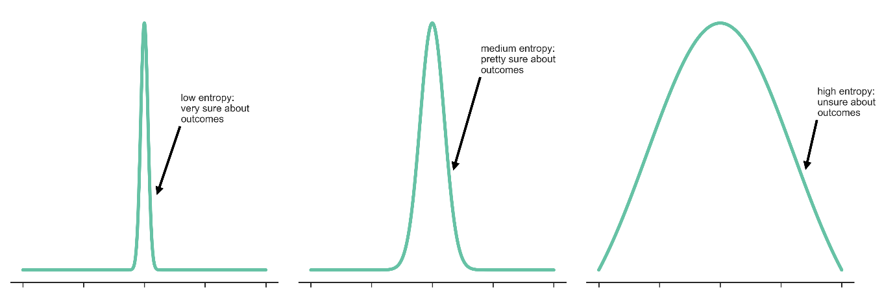

| Situation | Our Internal Uncertainty |
|---|---|
| "The sun will rise tomorrow" | Almost zero |
| "Will it rain tomorrow?" | Moderate |
| "Who will win a coin toss?" | High |
| "What did Bheem eat for lunch on March 12, 45 BC?" | Extremely high |

| Type | Source | Nature | Fix? |
|---|---|---|---|
| Aleatoric | Data ambiguity, linguistic variety | Irreducible | Clarify input, add constraints |
| Epistemic | Knowledge gaps, model blind spots | Reducible | RAG, fine-tuning, ensembling |
Best for regression tasks or when you care about continuous outputs (e.g., perplexity scores, confidence scores).
Best for classification/generation tasks with discrete tokens. More common in LLM analysis since we predict discrete tokens.
| Scenario | Primary Target | Mechanism | Key Insight |
|---|---|---|---|
| Varying Decoding (temp, top-k, top-p) |
Both | Stochastic sampling of semantic clusters | Semantic Entropy: High entropy over meanings reveals gaps |
| Rephrased Prompts | Aleatoric (minimize) | Clarification & perturbation | BayesPE: Sensitivity to phrasing reveals instability |
| N Models (Ensemble) | Epistemic (detect) | Inter-model disagreement | "Gold Standard" - disagreement isolates knowledge gaps |
| Adding Context (RAG) | Epistemic (minimize) | Parametric vs non-parametric grounding | Context fills knowledge gaps; residual = Aleatoric |
| Token Probabilities | Aleatoric (detect) | White-box log-likelihoods | P(True) / Min-Prob for OOD detection |
| Verbalized Confidence | Epistemic (attempt) | Metacognitive prompting | Prone to human-mimicry; needs CoT for calibration |
| Sycophancy Test | Epistemic (detect) | Adversarial steering/hints | High susceptibility = lack of epistemic conviction |
There's debate on what reduces Aleatoric vs Epistemic. For example:
• Adding context: Changes input (Aleatoric?) OR fills knowledge gaps (Epistemic?)
• Sampling techniques: Don't change weights but reshape uncertainty exposure